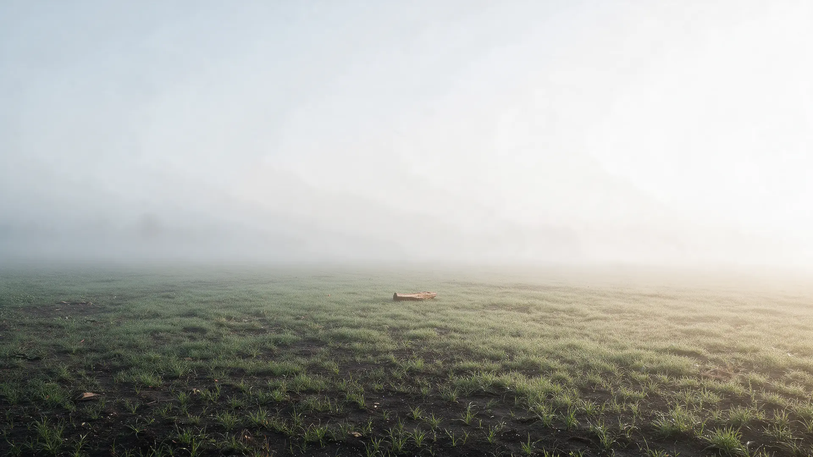
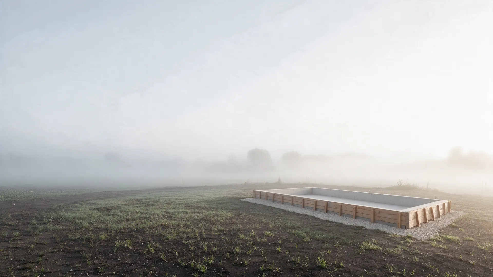
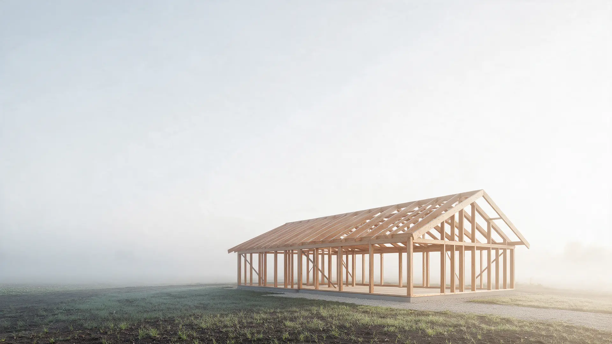
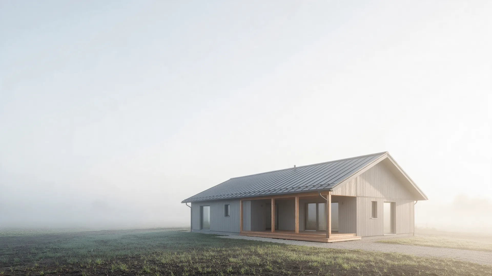
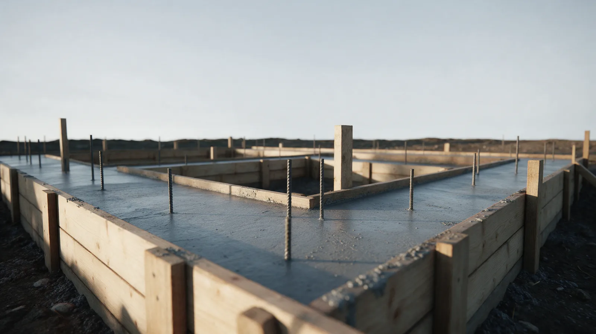
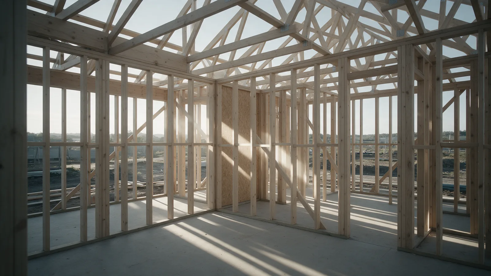
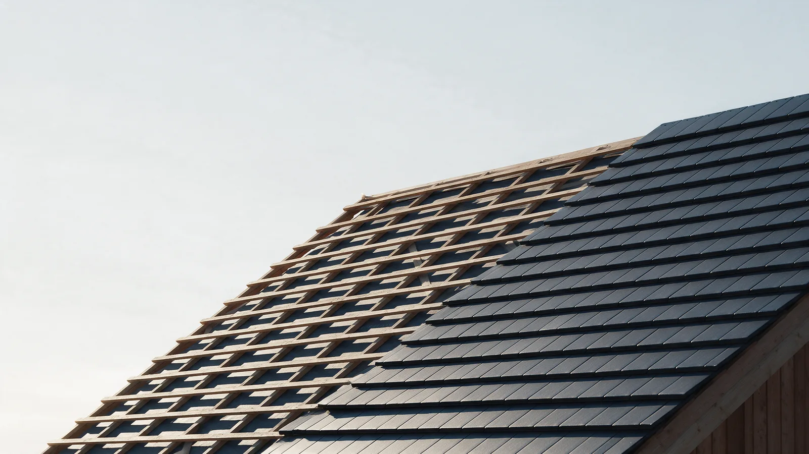
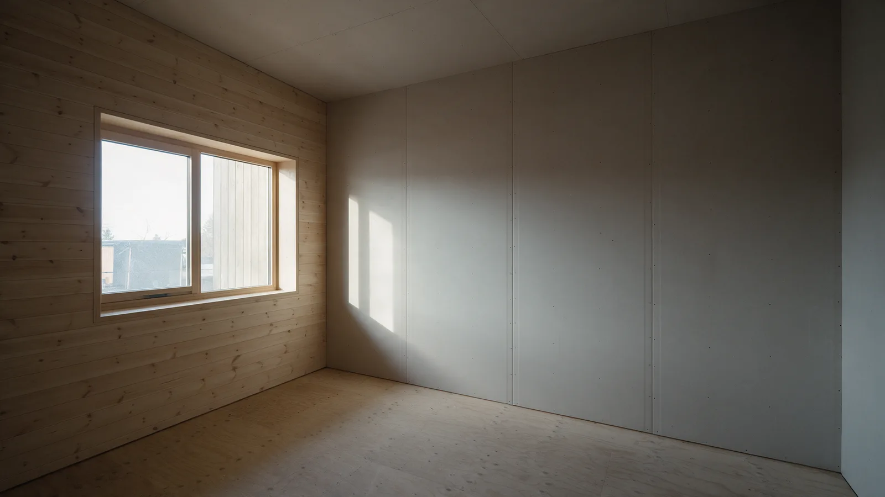
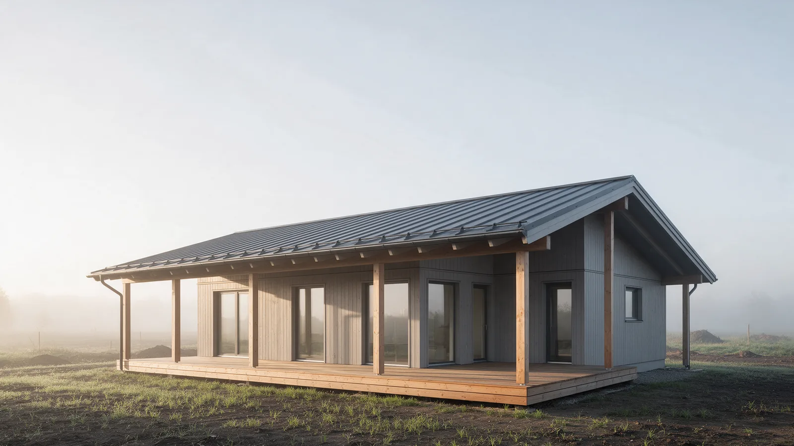
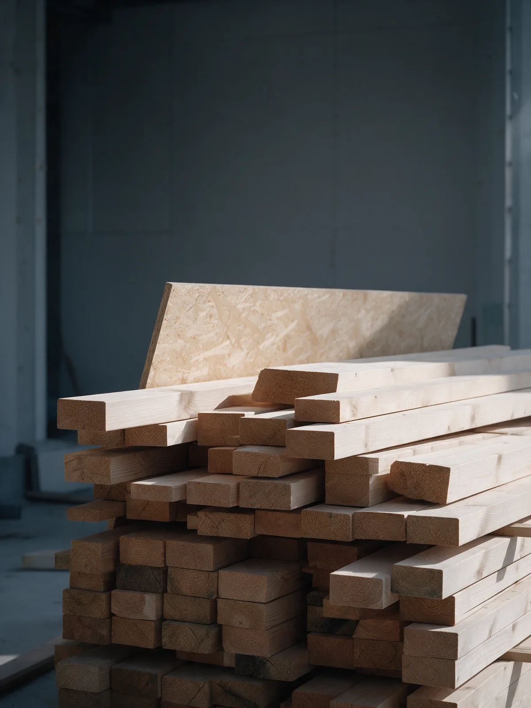

Строим дома и бани в Красноярске – смета в договоре
Дом и баня по этапам: пять этапов, по каждому акт и фотоотчёт. Смета фиксируется в договоре, оплата этапа после приёмки. Показываем стройку, а не рендеры.
Дом от 42 000 ₽ за м², баня от 48 000 ₽ за м² по типовому проекту. Точная сумма в смете, ответ в течение рабочего дня.
Этап05Сдача по акту Этап02Коробка Этап01Фундамент Этап00Ваш участок
Пять глав, пять актов приёмки. Каждая глава – один этап стройки: что делаем, сколько длится и как принимаете.
Фундамент
Первый этап и первый акт. Здесь видно, как мы работаем: разметка, опалубка, бетон и приёмка до того, как пойдём дальше.

Лента или сваи: по грунту, а не по привычке
Перед сметой выезжаем на участок и смотрим грунт и уклон. Для каркасного дома и бани чаще всего это лента или винтовые сваи, и выбор мы объясняем письменно: почему так и сколько стоит.
- Что в этапе
- Разметка, выемка грунта, песчаная подушка, опалубка, армирование, бетон, гидроизоляция.
- Срок
- Записан в договоре в календарных днях. Набор прочности бетона в срок уже заложен.
- Приёмка
- Акт по фундаменту: геометрия, отметки, фото. Следующий этап только после подписи.
Коробка
Каркас, обвязка, стены и перекрытия. Самый заметный этап: за неделю участок с лентой становится домом с окнами.
Каркас из строганого бруса камерной сушки
Стойки, обвязка и перекрытия из сухого строганого бруса. Сечение и шаг стоек записаны в смете, а не решаются «по месту».
На несущий каркас 5 лет по договору
Гарантия на каркас 5 лет прописана в договоре отдельным пунктом. Это условие сделки, а не обещание в мессенджере.
Акт по коробке до кровли
Осматриваем вместе: геометрия, крепёж, влажность древесины. Оплата этапа после подписи акта, не вперёд.

Кровля
Стропила, обрешётка, металлочерепица, водосток. После этого этапа дом закрыт от дождя, и внутри можно работать в любую погоду.

Тёплый контур закрыт
Стропила из того же сухого бруса, что и каркас. Кровельный пирог собираем полностью: пароизоляция, утеплитель, мембрана, вентзазор, и только потом покрытие. Марка металлочерепицы и толщина утеплителя записаны в смете.
- Что в этапе
- Стропила, обрешётка, кровельный пирог, покрытие, водосток, окна и входная дверь.
- Срок
- По договору. Окна заказываем ещё на этапе коробки, чтобы не ждать их после кровли.
- Приёмка
- Акт по кровле: проливка, примыкания, уклоны водостока, фото каждого ската.
Отделка
Утепление стен, инженерия, внутренняя и внешняя обшивка. Этап, где больше всего вопросов «а можно вот так?», и где мы отвечаем сметой, а не «посмотрим».

Отделка по смете, изменения по допсоглашению
В смете каждая позиция названа: вагонка или имитация бруса, гипсокартон, полы, электрика, вода, отопление. Захотели заменить материал в процессе? Считаем разницу, подписываем допсоглашение, и только потом делаем.
- Что в этапе
- Утепление, пароизоляция, обшивка снаружи и внутри, полы, электрика, водоснабжение, отопление, санузел.
- Срок
- По договору. Материалы отделки согласуем и закупаем до начала этапа, чтобы не стоять.
- Приёмка
- Акт по отделке: проверка инженерии под нагрузкой, ровность стен, все узлы на фото.
Сдача по акту
Последний акт, ключи и папка с документами: договор, смета, акты по этапам, паспорта на материалы и оборудование, гарантия.

Принимаете дом, а не «почти готово»
Финальный обход вместе: включаем воду, свет и отопление, проверяем окна и двери, смотрим каждый узел. Замечания записываем в акт, устраняем, и только потом подписываем сдачу и передаём ключи.
- Документы
- Договор, смета, пять актов по этапам, паспорта на материалы и оборудование, гарантийный лист.
- Гарантия
- На несущий каркас 5 лет, на остальные работы по договору. Приезжаем по заявке, а не «после сезона».
- Оплата
- Последний платёж после подписания акта сдачи. Ни один этап не оплачивается вперёд.
Пять этапов прочитали. Дальше состав сметы, но считать можно уже сейчас: от 42 000 ₽ за м² по типовому проекту.
Что входит в смету
Смета – это приложение к договору. В ней позиции с марками материалов, объёмами и ценой, а не «строительство дома, одна штука». Итог фиксируется, меняется только допсоглашением по вашей инициативе.
- 01
Выезд на участок и обмер
Грунт, уклон, подъезд для техники.
- 02
Проект и спецификация
Планировки, разрезы, узлы, ведомость материалов. По вашему проекту или по типовому с изменениями.
- 03
Материалы с марками и сечениями
Брус камерной сушки, OSB-3, утеплитель, мембраны, металлочерепица, окна: марка, толщина, объём.
- 04
Работы по пяти этапам
Каждый этап отдельной суммой. Видно, за что платите после каждого акта.
- 05
Доставка и разгрузка
Материалы на участок, вывоз строительного мусора после сдачи.
- 06
Инженерия
Электрика, вода, отопление, вентиляция: по проекту, с паспортами на оборудование.
- 07
Что не входит и что не строим
Отдельным списком: подключение к сетям, ландшафт, мебель.
- 08
Ориентир по типовым проектам
Дом 6×6 – от 1,6 млн ₽, дом 8×8 – от 2,8 млн ₽, баня 4×6 – от 1,2 млн ₽. Точная сумма – в смете по вашему участку и проекту.

Смета по вашему проекту
Дом от 42 000 ₽ за м², баня от 48 000 ₽ за м² по типовому проекту. Точная сумма в смете: по вашему участку, проекту и материалам, с разбивкой по пяти этапам.
- 01
Заявка или звонок
Перезвоним в рабочий день, уточним участок, размеры и что уже есть: проект, эскиз или только идея.
- 02
Выезд на участок
Смотрим грунт, уклон, подъезд.
- 03
Смета по пяти этапам
За рабочий день после выезда. Каждый этап отдельной суммой, материалы с марками.
- 04
Договор
Смета в приложении, сроки в календарных днях, оплата каждого этапа после акта.